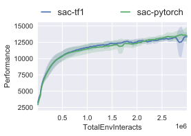
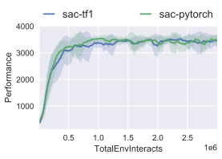
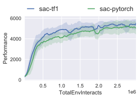
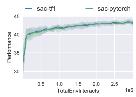
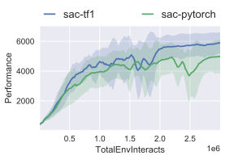

0.0.1
User Documentation
Introduction
Installation
Control
Algorithms
Running Experiments
Experiment Outputs
Plotting Results
Hardware
Hardware
Supported hardware
Deploy
Utilities Docs
Logger
Plotter
MPI Tools
Run Utils
Developer Zone
Release package
Release documentation
Etc.
Acknowledgements
About the Author
Machine Learning Control
»
SAC Head-to-Head
View page source
SAC Head-to-Head
¶
HalfCheetah
¶

Hopper
¶

Walker2d
¶

Swimmer
¶

Ant
¶
